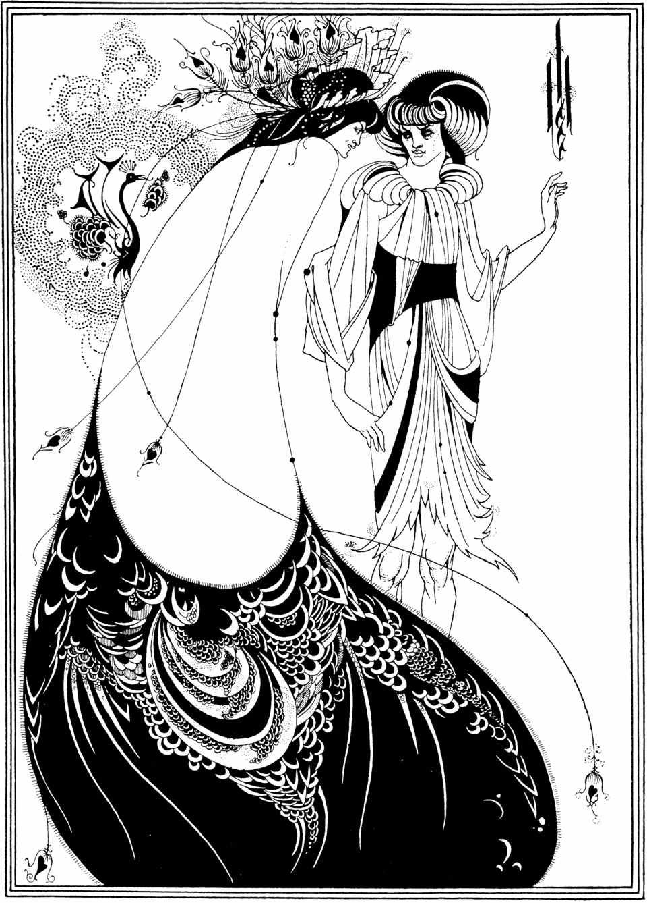

References / Illustration / 354
The Peacock Skirt, Beardsley’s illustration for Salome
Aubrey Beardsley’s black-and-white plate for Oscar Wilde’s Salome: a woman seen from behind in a vast robe of peacock-feather scales, joined to a second figure by long hairlines that end in feather eyes.
- Source
- Wikipedia: The Peacock Skirt
- Creator
- Aubrey Beardsley
- Made
- Drawn 1893; published 1894 (Wikipedia)
- Style
- Art Nouveau (agent-proposed, not yet reviewed by a person)
- Moods
- Decadent, graphic, sinuous
- Evidence
- Downloaded and inspected a 960 × 1338 px copy of a line reproduction on Wikimedia Commons, sourced there from humanitiesweb.org. It is a clean black-and-white reproduction, not a museum photograph, so the physical copy it shows is not known. Commons credits another copy to the Harvard Art Museums, which hold the original drawing; that record was not read.
- Reviewed
- Rights
- Open license, stored. License: public domain. Rights policy

Context
Wikipedia: The Peacock Skirt is an 1893 pen-and-ink illustration, first reproduced as a wood engraving in the first English edition of Wilde’s Salome (Elkin Mathews and John Lane, 1894), and later as a line block. It was the second of ten plates. The original drawing was bequeathed to the Fogg Art Museum, Harvard, in 1943. The print measures 178 × 127 mm. Wikipedia.
Wikipedia notes the influence of Whistler’s Peacock Room and of Japanese woodblock prints, and says the refined curving lines anticipate the Art Nouveau aesthetic. The Art Nouveau article names Beardsley, whose drawings featured “the curved lines that became the most recognizable feature of the style”, as a key influence, and says the Maison de l’Art Nouveau showed his posters. Wikipedia: The Peacock Skirt; Wikipedia: Art Nouveau.
Observed
- The image is pure black line and solid black on white, framed by a double rule.
- At left, a woman seen from behind wears a robe that swells into a huge teardrop shape. Its lower half is solid black filled with white scale and feather-eye patterns.
- Long, very thin lines hang from her headdress and shoulders in wide curves and end in small feather-eye pendants.
- A headdress of peacock feathers spreads above her head; a small stylized peacock sits at upper left in a cloud of dotted lines.
- At right, a second figure in a pleated, layered tunic turns toward her, drawn in fine parallel lines.
- Large areas of the sheet are left empty white between the figures.
Why it belongs
Beardsley shows how far the style can go with only line: the curve, the peacock motif, and the contrast of dense pattern with empty ground carry everything.
It is a partial fit for the Art Nouveau grammar, which expects earthy colours; it belongs to the British source of the style more than to its Paris core.
Borrow
Contrast one very dense patterned mass with a large empty ground.
Use a hairline curve that ends in a small ornament, such as a feather eye or a bud, as a connector or divider.
Measured
Machine-extracted by tools/image-traits.py on . Full measurement.
- Mean chroma
- 0
- Palette
- #fefefe 49%
- #010101 18%
- #cfcfcf 5%
- #a3a3a3 3%
- #dddddd 3%
- #b5b5b5 3%
- #eaeaea 3%
- #676767 3%

